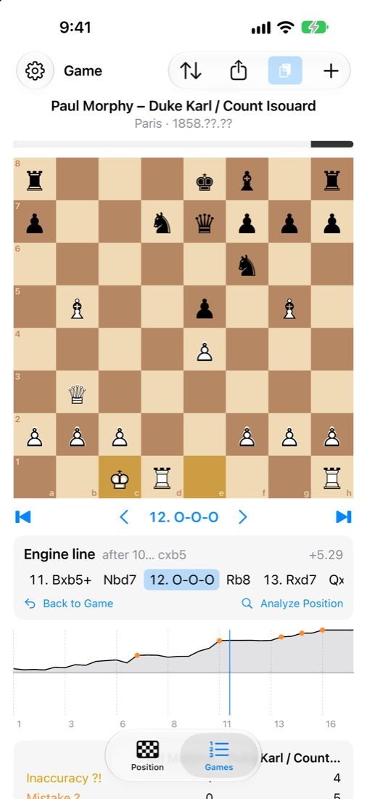
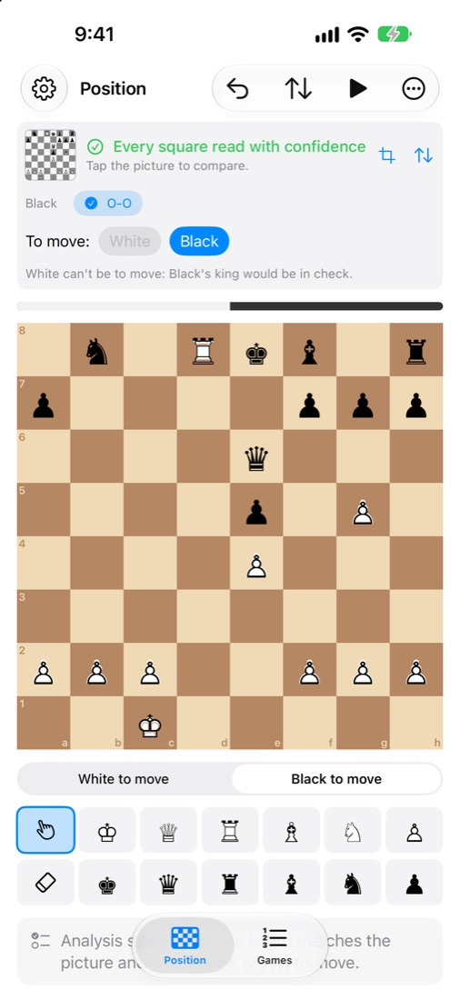
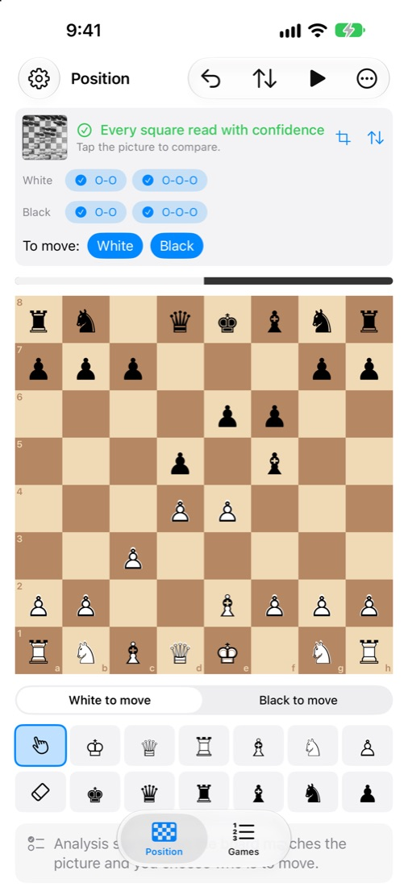

Анализ ваших партий прямо на телефоне.
Сильный шахматный движок на iPhone и iPad находит ваши неточности, ошибки и грубые ошибки и показывает лучший ход. Партии можно загрузить из файлов PGN или с печатных страниц, а позиции — с диаграмм или с доски на столе. Без аккаунта, без подписки, без рекламы: всё работает на вашем устройстве.




Анализ
Целые партии
Analyze Game проверяет каждую позицию и отмечает каждый ход как неточность, ошибку или грубую ошибку по тому, сколько он теряет по сравнению с лучшим ходом движка. Стрелка показывает лучший ход.
Почему
График оценки по всей партии, итоги по каждому игроку со средней потерей и вариант движка, проигранный на доске.
Любая позиция
Расставьте позицию, вставьте FEN или перейдите к любому ходу партии: оценка, лучший ход и главный вариант обновляются по мере расчёта.
PGN с комментариями
Отправьте проанализированную партию как PGN с оценками, символами и лучшими ходами в виде вариантов — для любой шахматной программы.
Загрузка партий и позиций
PGN
Открывайте файлы .pgn из «Файлов», Почты или меню «Поделиться», или вставьте либо наберите партию.
Печатные партии
Отсканируйте страницу книги или журнала камерой либо используйте фото или снимок экрана. Ходы распознаются на устройстве и проверяются по правилам; угаданные ходы показываются вам для проверки.
Диаграммы
Сфотографируйте диаграмму из книги, журнала или с сайта или сделайте снимок экрана — и позиция появится на доске, готовая к анализу.
Настоящие доски
Сфотографируйте доску на столе или наведите на неё камеру в реальном времени — фигуры будут распознаны в позицию, которую можно проверить и исправить.
Печатные партии и диаграммы распознаются надёжно. Распознавание настоящей доски — более новая функция, и результат зависит от комплекта фигур, освещения и ракурса: лучше всего с фигурами Стаунтона, если смотреть со стороны белых и сверху, чтобы вся доска была в кадре. Любое поле можно исправить, а углы доски задать вручную. Распознавание улучшается с каждым обновлением.
Конфиденциальность и открытый код
Chess Analyzer совсем не пользуется интернетом: без аккаунта, без аналитики, без рекламы, без отслеживания. Партии, фото и настройки остаются на вашем устройстве (политика конфиденциальности).
Приложение — свободное ПО под лицензией GNU General Public License v3. Его движок, Creatica AB, использует оценку NNUE от Stockfish. Исходный код: приложения и движка.
Ищете программу для Windows? Creatica Chess Game Analyzer для Windows.
The app itself is in English. This page in English.